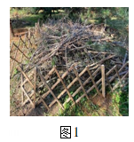
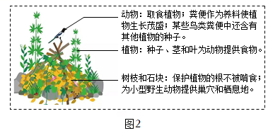
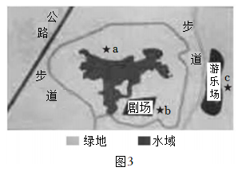

2024年北京市西城区中考生物真题 · 科普阅读 第30题
30. 阅读科普短文，回答问题。
在北京的部分郊野公园，你会发现一些石块和枯枝落叶堆积在一起。这些石块和枯枝落叶真的是园林作业后随意丢弃或遗忘的吗？它们究竟是什么？有着什么样的作用？其实这是工作人员特意堆砌而成的本杰士堆（如图1）。

本杰士堆的搭建过程并不复杂；先选择枯木和树枝等图1搭建框架，然后选取石块放置在周边进行固定，最后倒入含有种子的土壤与落叶。搭建后，随着植物的生长，吸引来取食其叶片的昆虫，一些食虫鸟也会来此栖居。慢慢地，还会有小型兽类到访此处。本杰士堆中的生物多样性逐渐增加，构成了微小的生态系统，如图2所示。

本杰士堆有生态修复型和科普教育型等类型。生态修复型的搭建地点要选择人为干扰程度低的地方，让野生动物有自由的栖息空间，加速生态系统的修复过程。科普教育型可修建在公园休憩区附近，以进行科普教育和宣传，提高人们的环保意识。本杰士堆搭建的意义是用小生态的构建促进大环境的改善，实现“以生态的办法解决生态问题”。北京市园林绿化局将在森林和郊野公园中搭建更多的本杰士堆，推进首都生态环境的改善。
（1）本杰土堆中的所有生物和______构成了生态系统。其中的植物可为动物提供食物，在生态系统成分中属于_____。根据文中信息写出一条含有食虫鸟的食物链：_______
（2）下列关于本杰士堆的叙述正确的是______（多选）。
a．动物会取食植物，对生态系统只有负面作用
b．微生物能够分解动物粪便，促进物质循环
c．其中的各种生物相互联系，相互影响
（3）生态环境的改善需要每个人的关注和参与。若你和生物小组的同学参加有关部门组织的去某公园搭建本杰士堆的志愿活动，请完成以下实践活动记录单。
“搭建本杰士堆，做环保小卫士”实践活动记录单：
①为了解公园现有的本杰士堆数量及分布情况，我们将采用______法开展研究。
②结合公园的地理位置与设施分布，我们绘制了下图所示的公园部分区域示意图。该区域中适宜搭建生态修复型本杰士堆的地点是______（填字母），原因是_______。

③为了让更多的公众关注和参与生态环境的保护工作，需要向公园游客进行相关的科普宣传，我们计划这样做：_______。（请写出宣传方式并简述宣传内容）